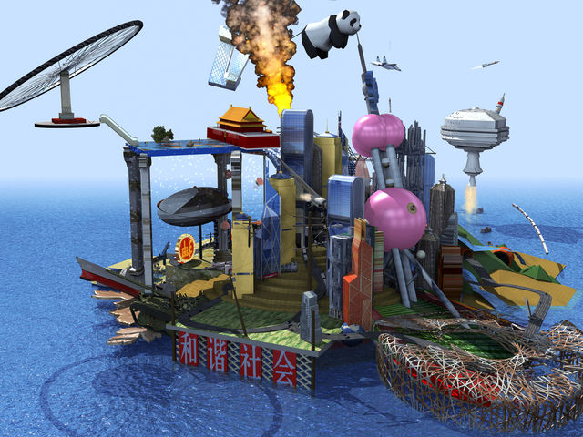
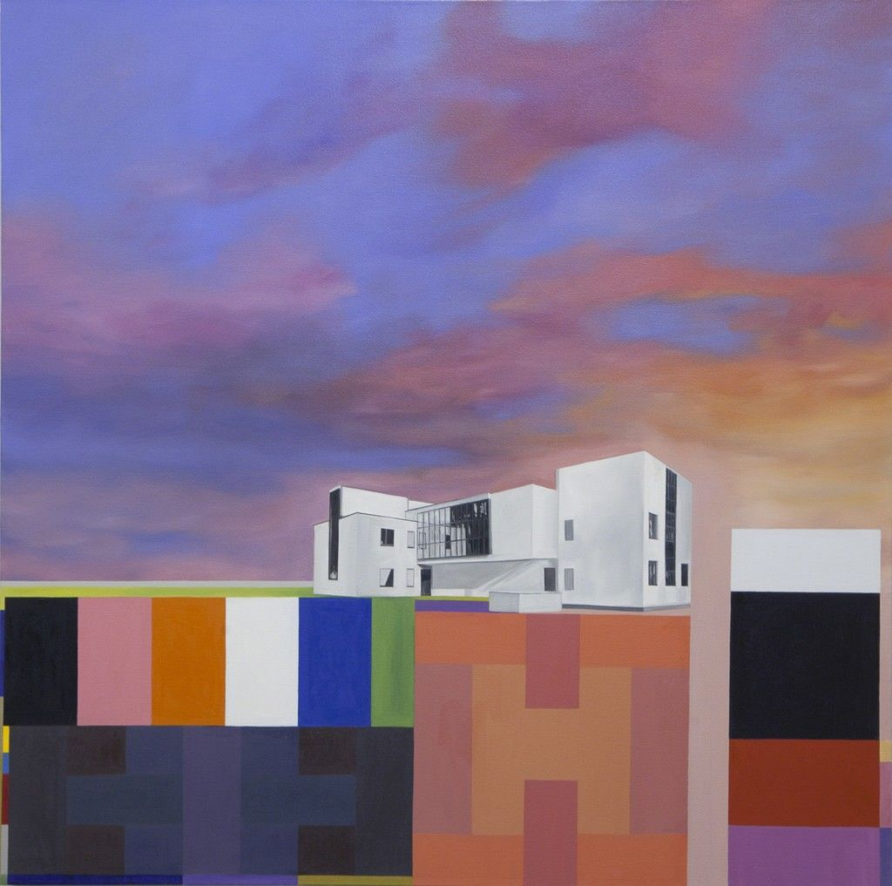
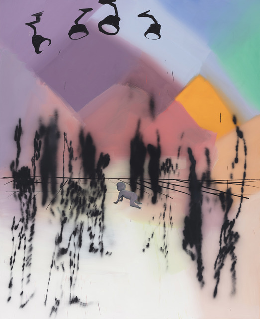
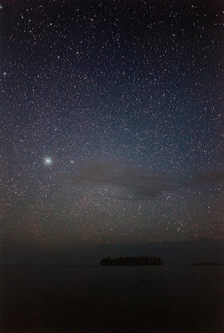
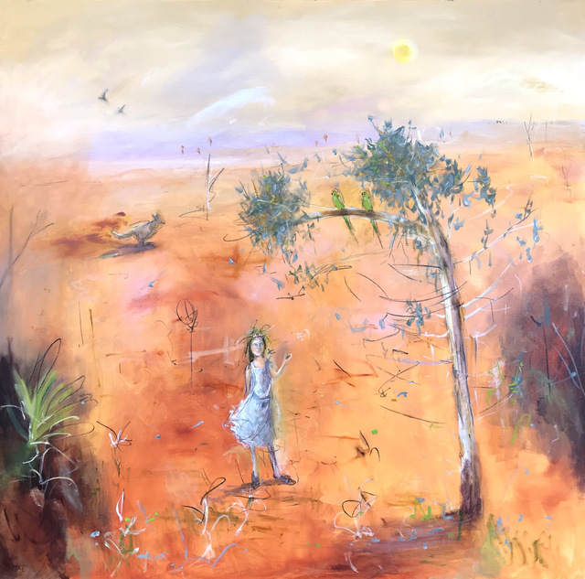
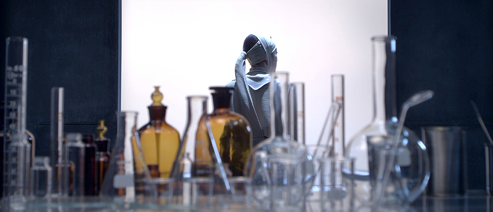
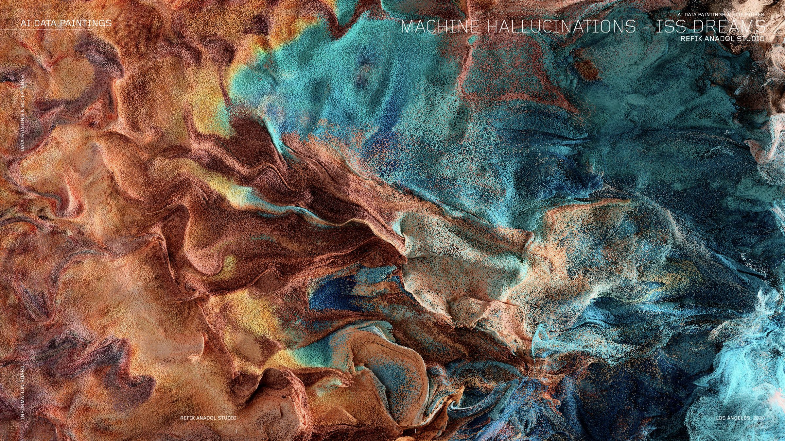
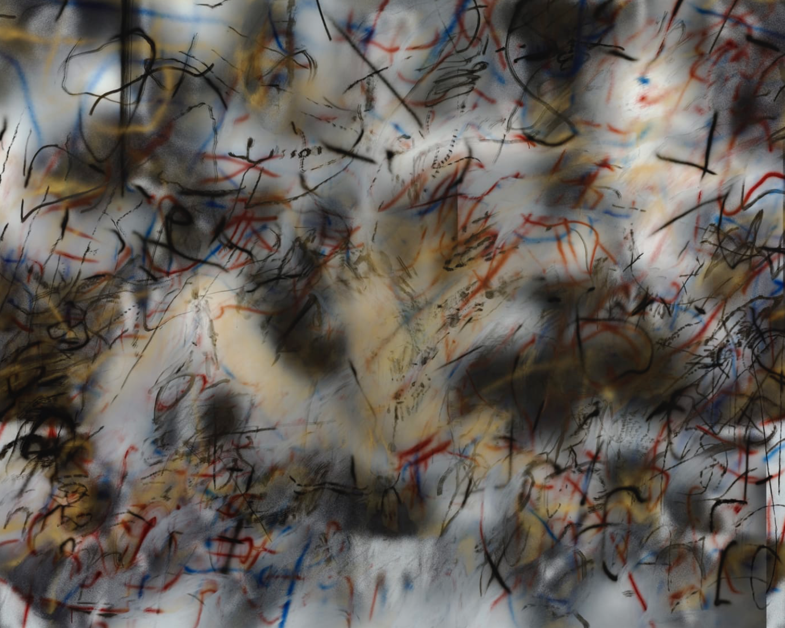
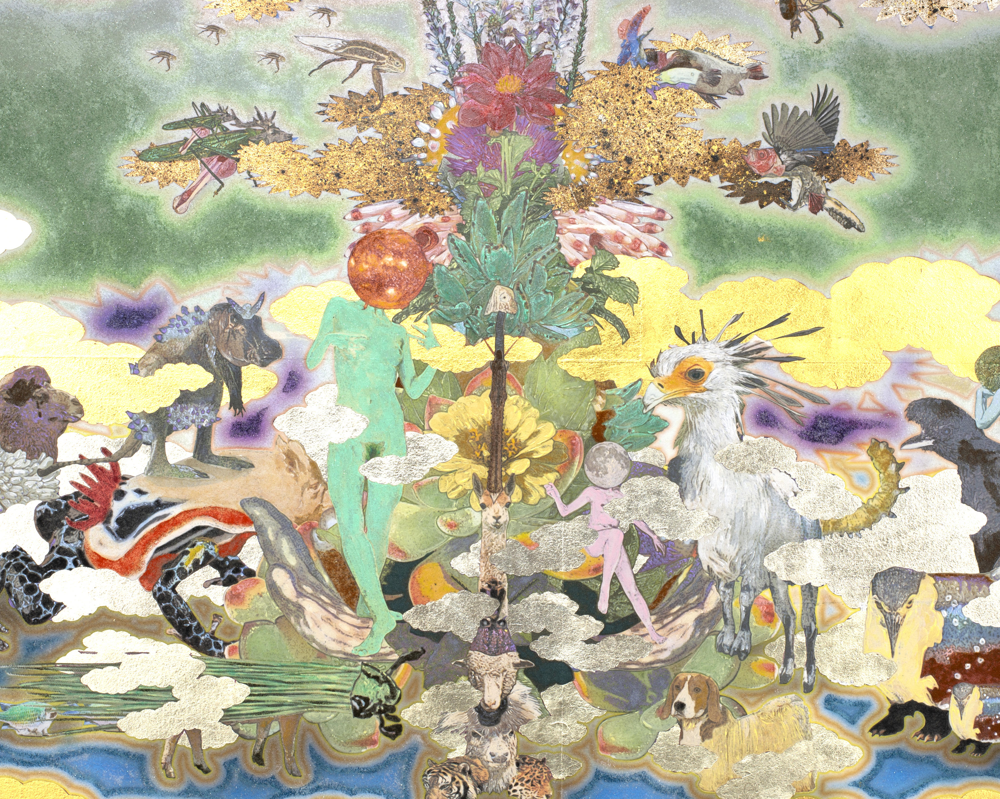

RMB City: A Second Life City Planning

Gropius Landscape, Master's House

Spectral Disco

Munuwata Sky

Golden Retreat

El Fin Del Mundo (The End of The World)

Machine Hallucinations

A Mercy (after T. Morrison)

The Dream
